化工人的一天：3D 工安教育遊戲
在化工業，新人教育訓練要花很多時間，而安全永遠是第一位。所以我想做一款遊戲，讓工安訓練變得有趣。玩家扮演剛進化工廠的新人工程師，一天之內要面對各種突發狀況。整款遊戲我沒有自己寫任何一行程式。

想解決的問題
新人工安訓練很重要但容易枯燥，希望用遊戲讓新人在「做中學」，知道遇到狀況時該怎麼反應。
AI 怎麼幫忙
Claude 陪我寫規格書：反問需求、上網查證 301 個來源；再把規格書交給 Claude Code 寫程式、自動測試。
成果
9 類突發事件、11 個小遊戲、44 張知識卡、14 個徽章、60 個專有名詞解釋，放在網路上就能玩。
01過程
第一階段：和 AI 一起寫規格書
-
把想法寫下來，最後加一句「請反問我」
設計一款遊戲：化工人的一天 使用者扮演剛進入化工廠的工程師，面對不同的突發情境，例如：管線壓力異常升高、偵測器發現可燃氣體濃度上升、泵浦異常震動、化學品少量洩漏、操作人員未正確穿戴 PPE。 想要 3D 的，可以控制小人行走，手機電腦都要可以玩。 …… 我們要整理出一份「規格書」給 Claude Code 來生成全部的程式。 你有什麼需要跟我確認的？每次你可以問我三個一句話的問題，如果你覺得足夠了就直接生規格書。AI 問了三個問題：主要玩家是誰、遊戲流程怎麼安排、失敗怎麼判定。回答完，它就產生了一份很完整的規格書。失敗的部分它設計成「狀況逐級惡化 → 事故調查報告 → 時光回溯」，既讓人感受到後果，又不會太殘酷。
看過之後我請它改兩個地方：專有名詞都要可以點開看解釋，以及每個突發事件都配一個貼切的小遊戲。
-
找真人專家補充：事件從 5 類擴充到 9 類
我覺得事件種類太少，就去請教公司環境風險管理部的同事，請他分享業界比較常發生的情況，再補充給 AI。事件從 5 類擴充為 9 類，也新增了配電室、包裝倉庫、維修工作區，還有堆高機的「虛驚事件」。
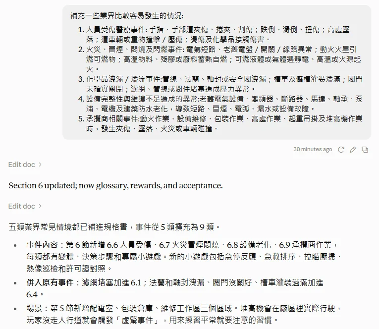
把同事提供的業界常見情境補充給 AI -
請 AI 上網查證，查不到的就刪掉
我也把公司公開的教育訓練教材給 AI 參考，結果發現有些是舊資料。所以我打開網頁搜尋模式，請 AI 上網確認並附上出處。它瀏覽了 301 個來源，找到好幾個過時的地方，例如：
- 「勞工安全衛生法」已改名為「職業安全衛生法」
- 重大職災通報時限是 8 小時，不是 24 小時
- CPR 口訣已更新為「叫叫 CABD」
最後我要求：找不到官方依據或不確定的內容，一律不放進遊戲。
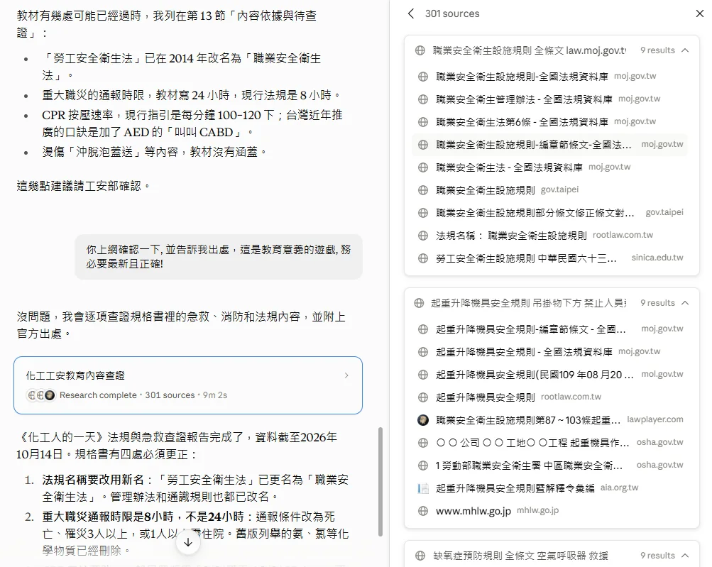
AI 上網查證，參考了 301 個來源 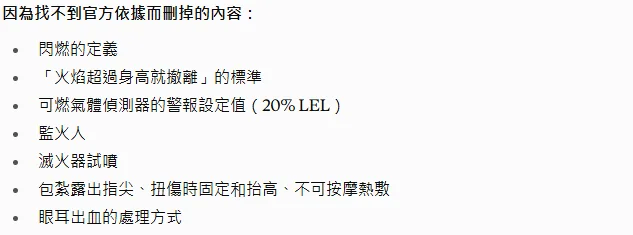
因為找不到官方依據而刪掉的內容 小插曲 這個指令花掉很多 Claude 的使用額度，只能等 5 個小時後再繼續。不過看到它查了 300 多個網頁，好像又不太虧。 -
最後補上音效，而且不能有版權問題
突然想到遊戲怎麼能沒有音效！我請 AI 補上，並要求必須可以公開使用。實作時，Claude Code 直接用程式即時合成所有音效，不需要任何音檔，也就完全沒有版權問題。
第二階段：交給 Claude Code，逐條驗收
-
依規格書生成，再請 AI 寫自動測試
我把規格書交給 Claude Code 生成完整的遊戲。第一次生成後，我逐節對照規格書檢查，並請它寫自動化測試：讓電腦自己把 9 類事件和小遊戲全部玩過一次，同時在手機直式、手機橫式、電腦三種螢幕尺寸截圖檢查版面。
規格書要求 實際作品 單一網頁檔，模型和貼圖都用程式產生 單一 index.html（約 350 KB），沒有任何圖片或模型檔 電腦、手機都能操作走路、轉視角、縮放 都能用，手機可以同時移動和轉視角 9 類突發事件，每類都有決策步驟和小遊戲 9 類事件、11 個小遊戲全部可玩 專有名詞都能點開看白話解釋 60 個名詞，開啟解釋時計時會暫停 約 40 張知識卡、12 個徽章 44 張知識卡；徽章測試後增加為 14 個 360px 寬的手機不會出現破版 第一次生成時手機直式有問題，經多次修正後通過
第三階段：自己實際玩，和 AI 來回修改
-
第 1 輪：手機版面
用手機打開後，發現更衣室那關下面的按鈕都按不到。因為大部分人都是直拿手機玩，我請 AI 不只修這一關，而是把所有畫面都用直式手機檢查一遍。它用三種手機寬度逐一截圖，找出並修正了好幾個問題。
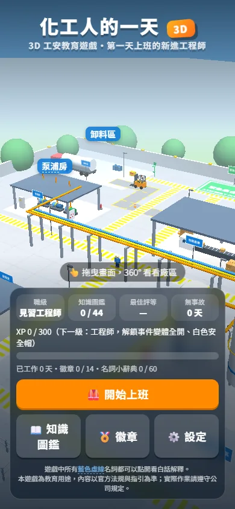
封面 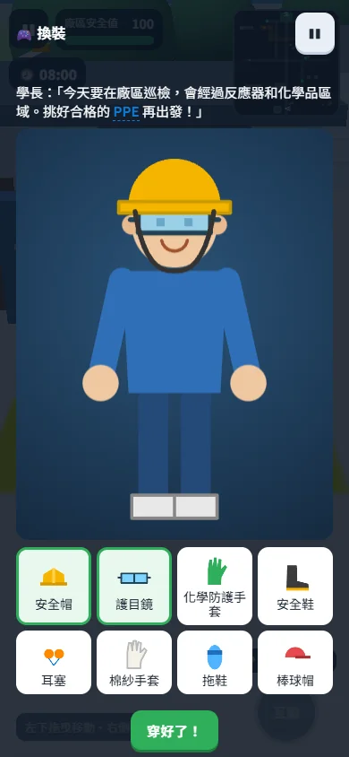
換裝小遊戲 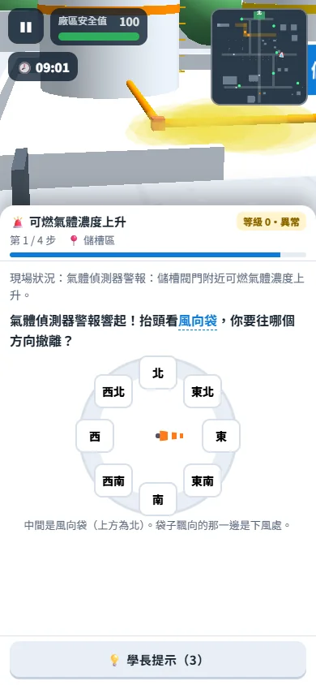
選撤離方向 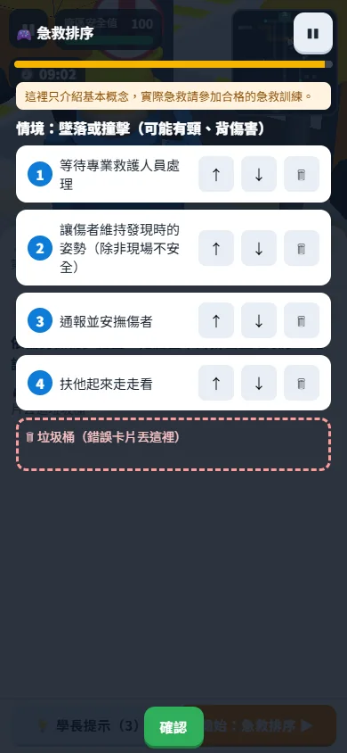
急救排序 -
第 2 輪：問 AI 遊戲機制，找出設計上的漏洞
我問 AI「風向對後續的影響是什麼」，才發現風向只影響「可燃氣體」這一個事件。如果當天沒抽到這個事件，早上開會講的風向就沒有意義。我也學會用 AI 告訴我的除錯模式，直接觸發特定事件來測試。
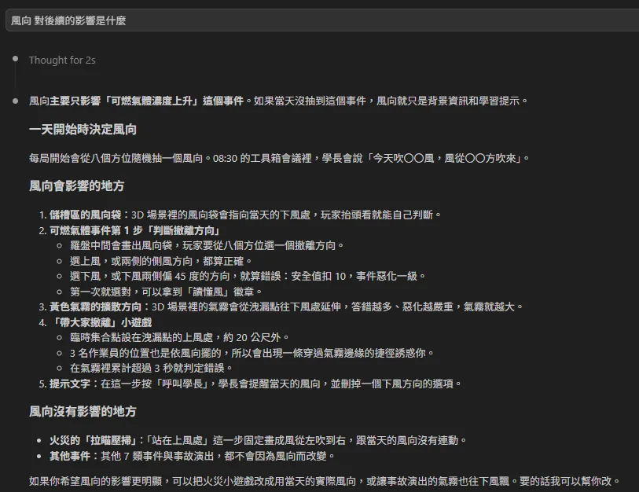
詢問 AI 風向對遊戲的影響 -
第 3 輪：讓遊戲流程更合理
玩了幾次發現，時間一直自己跑，中午之後常常沒事做。我把一堆問題一次整理給 AI 修改。後來又調整了時間規則：巡檢一處多花 30 分鐘；下班前沒做完，可以選擇「加班」或「請晚班學長幫忙」。
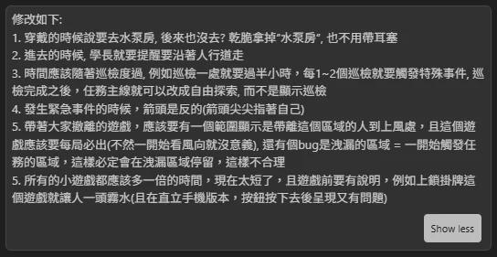
一次整理給 AI 的修改清單 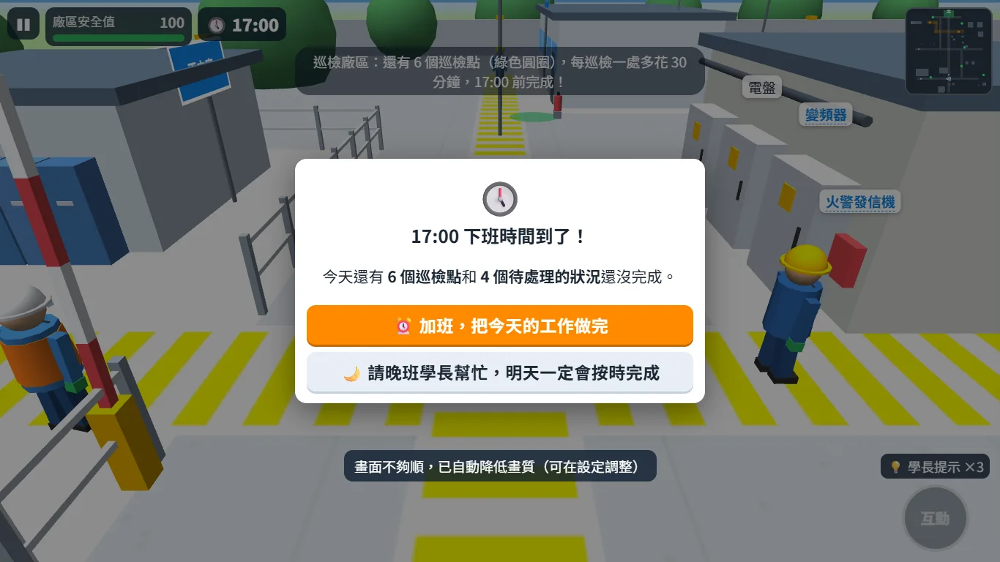
17:00 還沒做完，可以選擇加班或請學長幫忙 -
第 4 輪：成就和封面
流程改了之後，我問 AI「成就需要調整嗎？」它發現如果玩家只做一點點就交給晚班學長，「零事故日」這類徽章會太容易拿，所以改成要完成一整天的工作才算，並新增了兩個徽章。封面原本是一整片深藍色，看不出是 3D 遊戲，改成背景直接顯示可以旋轉的 3D 廠區。
每輪修改完，我都請 AI 用自動測試重新跑一遍，確認沒有改壞其他地方，再更新到網路上。
02成果
一天的流程：08:00 換裝 → 閘門檢查防護具 → 工具箱會議 → 巡檢廠區、處理突發事件 → 17:00 下班報告。
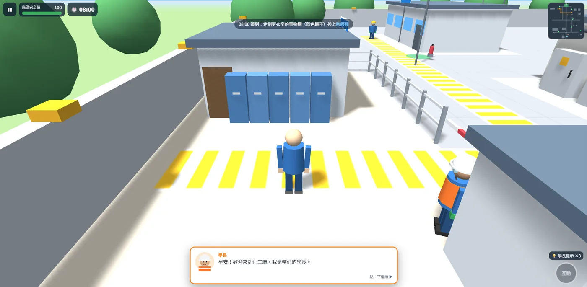
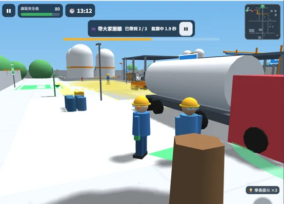
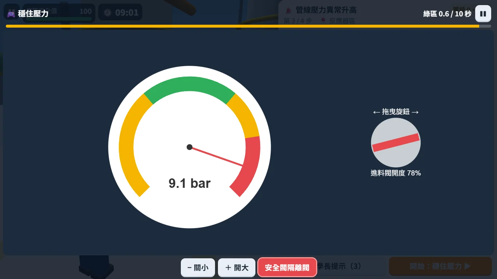
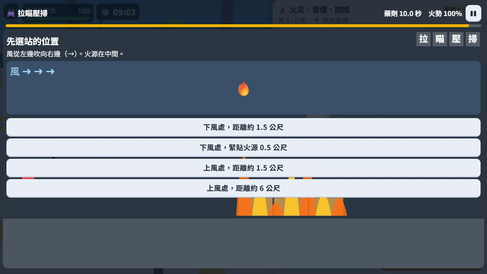
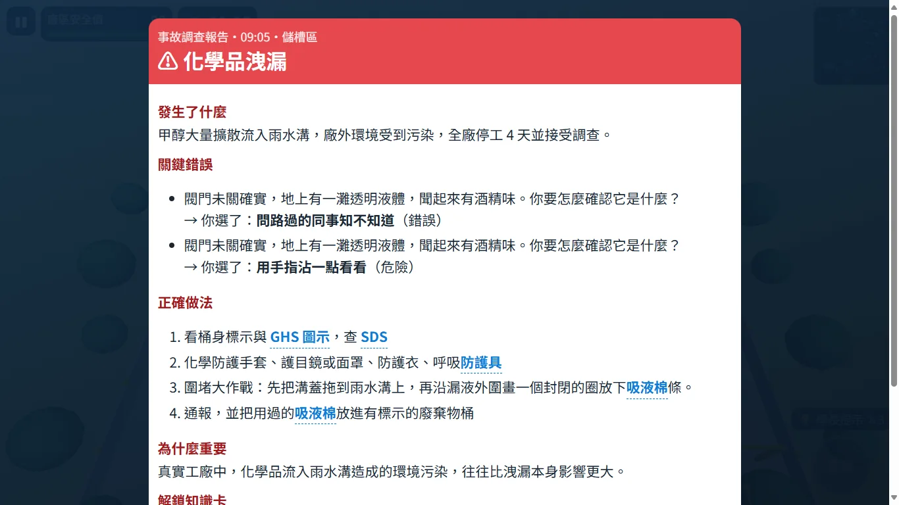
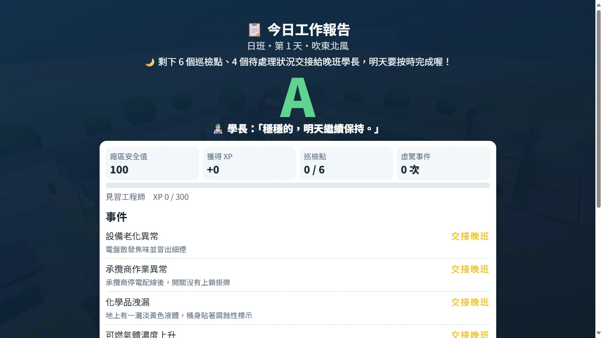
03我的心得
這次最大的收穫，是體會到「規格書」的重要。一開始我只有模糊的想法，透過讓 AI 反問、請同事補充業界情境、再請 AI 上網查證，規格書越來越具體。Claude Code 拿到規格書後，第一次生成就把 9 類事件、小遊戲、圖鑑、徽章都做出來了。
不過，「功能都有」不等於「好玩、合理」。實際玩過之後，我才發現很多規格書沒想到的問題：手機按鈕按不到、下午沒事做、早上講的風向沒有用到……這些都需要人實際去玩、用自己的經驗判斷。我也發現，問題描述得越具體（附截圖、說清楚在哪一關、預期應該怎樣），AI 修得越準。
AI 查證資料的能力也讓我印象深刻。它找出教材裡已經過時的法規和急救知識，這對教育用途非常重要；如果遊戲教的是錯的，反而會害了新人。不用自己寫一行程式，就完成一款手機和電腦都能玩的 3D 遊戲，這是我以前完全想像不到的。
💼 帶回工作用
這一堂可以套用到工作上的地方：
- 想請 AI 做東西，先一起寫「規格書」把目的、使用者、流程、驗收標準都寫清楚，AI 做出來的東西會準很多，之後也能逐條對照檢查。
- 專業內容：真人補充 + AI 查證請懂的同事補充實務情境，再請 AI 上網查證並附出處。查不到依據的內容，寧可不放。
- 「功能都有」不等於「好用」AI 做完之後一定要自己實際用過，用使用者的角度找問題。
- 回報問題要具體附上截圖、說明在哪個畫面、預期應該怎樣，AI 才修得準。
- 請 AI 幫你做檢查例如請它寫自動測試、在不同尺寸的螢幕上截圖，每次修改後跑一遍，避免改了這裡、壞了那裡。